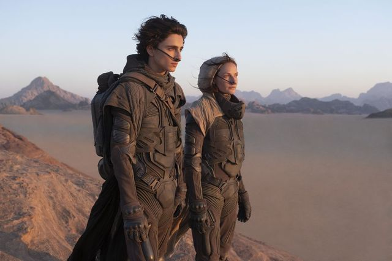

You know, Dune: Frank Herbert's 1965 novel about royal houses wrestling for power (in space, with worms). The notoriously un-adaptable novel is once again being adapted, and this time, it could actually be good. Here's what we know so far.
It's been postponed to 2021.
Dune was originally slated to debut in theaters on December 18, 2020—but due to the ongoing pandemic, and the accompanying widespread closure of movie theaters, it's been rescheduled. Per the Hollywood Reporter, Warner Bros. is now eyeing an October 2021 premiere, likely October 1.
The cast is stacked.
Timothée Chalamet stars as Paul Atreides, the son of the Duke Leto Atreides (Oscar Isaac) and his concubine, the Bene Gesserit-trained Lady Jessica (Rebecca Ferguson). The story begins as the family move from their lush home planet, Caladan, to rule another: the worm-filled desert that is Arrakis, otherwise known as Dune.
The Duke's trusted advisers, Gurney Halleck and Duncan Idaho, and played by Josh Brolin and Jason Momoa, respectively, while Javier Bardem portrays Stilgar, a leader of Arrakis's native Fremen, and Sharon Duncan-Brewster will appear as Dr. Liet-Kynes, an ecologist with a foot in both worlds (and a character that Herbert had originally written as a man). Zendaya is taking on the role of Chani, Paul's love interest.
Joining them are Stellan Skarsgård as Baron Vladimir Harkonnen, Dave Bautista as his nephew Beast Rabban, and Charlotte Rampling as the Reverend Mother Gaius Helen Mohiam.
Timothée Chalamet as Paul Atreides and Rebecca Ferguson as the Lady Jessica in a preview image for Dune.
CHIA BELLA JAMESA sci-fi auteur is running the show.
Denis Villeneuve, he of Arrival and Blade Runner 2049 fame, is directing Dune—and he had a major condition for signing on. "I would not agree to make this adaptation of the book with one single movie," Villeneuve told Vanity Fair in May. "The world is too complex. It’s a world that takes its power in details." That's right: there's already a Dune 2 on the horizon (though it may be pretty far off).
He also insisted that they shoot in the actual desert, and built as many sets as possible, rather than relying entirely on CGI. "My argument is that they didn’t shoot Jaws in a swimming pool," Villeneuve explained during a digital press event for the trailer's debut. "The title is Dune, and we needed to be in the real environment, so we would be inspired by the infinity."